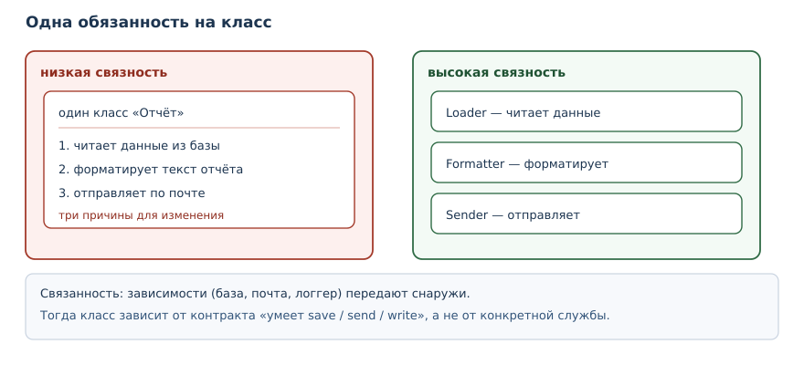
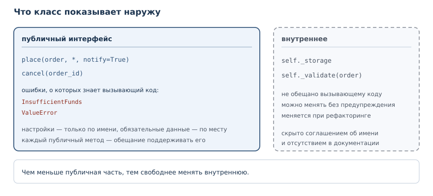

Проектирование классов и API
Связность, связанность, композиция и дизайн исключений: как решать, где провести границу класса и что показать наружу.
В этой главе
Вы умеете писать классы, защищать состояние, строить иерархии и описывать контракты. Остался вопрос, который решают не синтаксисом, а решениями: какие классы вообще нужны, что каждый из них делает и что показывает наружу. Хороший класс легко изменить, не задевая остальную программу; плохой приходится править в нескольких местах, и каждое исправление тянет за собой следующее. В этой главе речь пойдёт о связности, связанности, композиции и проектировании публичного интерфейса — с проверяемыми примерами.
30.1 Зачем это нужно
Представьте класс, который читает заказы из базы, считает сумму, печатает отчёт и отправляет его по почте. Пока программа маленькая, он работает. Затем нужно поменять формат отчёта — и правка задевает класс, который занимается базой. Затем нужно отправлять отчёт не по почте, а в мессенджер — и снова правится тот же класс. Каждое изменение рискует сломать часть, не связанную с задачей.
Проектирование начинается с разделения обязанностей. Класс, у которого одна причина для изменения, меняется реже и безопаснее. Класс, который знает о своих зависимостях только через узкий контракт, можно проверить отдельно. Публичный интерфейс, спроектированный заранее, позволяет развивать код, не ломая чужие вызовы. Всё это — не абстрактные принципы, а решения, которые видно в коде: в количестве методов, в параметрах конструктора, в том, какие исключения класс поднимает.
30.2 Что вы сможете после этой главы
Глава даёт критерии, по которым проектное решение можно проверить, а не только обсудить. Вот что вы будете уметь к концу:
- оценивать связность класса и замечать, когда он делает слишком много;
- уменьшать связанность, передавая зависимости снаружи;
- выбирать композицию там, где наследование создаёт лишнюю связь;
- проектировать небольшой публичный интерфейс: имена, параметры, ошибки;
- описывать ошибки предметной области собственными исключениями.
30.3 Связность
Связность — мера того, насколько элементы модуля или класса относятся к одной ответственности.
Простой признак низкой связности — класс отвечает на вопрос «за что он отвечает?» списком из нескольких несвязанных пунктов. Признак высокой связности — все методы работают с одним набором данных и решают одну задачу.
Сравним два варианта. В первом классе собрано всё:
class Report:
def __init__(self, title, rows):
self.title = title
self.rows = rows
def total(self):
return sum(row["amount"] for row in self.rows)
def as_text(self):
lines = [self.title]
for row in self.rows:
lines.append(f"{row['name']}: {row['amount']}")
lines.append(f"Итого: {self.total()}")
return "\n".join(lines)
report = Report("Продажи", [{"name": "Книга", "amount": 500}, {"name": "Ручка", "amount": 50}])
print(report.as_text())
Продажи
Книга: 500
Ручка: 50
Итого: 550
Пока в классе только строки отчёта и сумма, всё в порядке. Но если добавить сюда загрузку из базы и отправку по почте, получится класс с тремя причинами для изменения: структура данных, формат отчёта и способ доставки. Разделим обязанности:
class Order:
def __init__(self, title, rows):
self.title = title
self.rows = rows
def total(self):
return sum(row["amount"] for row in self.rows)
class OrderFormatter:
def __init__(self, width=20):
self.width = width
def format(self, order):
lines = [order.title]
for row in order.rows:
lines.append(f"{row['name']:<{self.width}} {row['amount']}")
lines.append(f"{'Итого':<{self.width}} {order.total()}")
return "\n".join(lines)
order = Order("Продажи", [{"name": "Книга", "amount": 500}, {"name": "Ручка", "amount": 50}])
print(OrderFormatter().format(order))
Продажи
Книга 500
Ручка 50
Итого 550
Теперь Order отвечает за строки и сумму, OrderFormatter — за вид. Формат
можно менять, не трогая записи, а записи — не трогая формат. Это и есть
высокая связность: каждый класс занят одной задачей, и его методы работают с
одним состоянием.

30.4 Как найти границу класса
Связность — критерий, но не рецепт. Практический способ провести границу — выписать все причины, по которым класс может измениться, и посмотреть, какие из них связаны с разными людьми или разными событиями.
Если бухгалтерия просит новый формат счёта, а отдел логистики — новый способ доставки, это две разные причины. Они не должны вести к правке одного класса. Если же обе просьбы меняют правило расчёта стоимости доставки, они относятся к одной обязанности, и дробить её незачем.
Второй способ — посмотреть на состояние. Класс, который держит поля о заказе и одновременно настройки шрифта для печати, работает с двумя наборами данных. Скорее всего, это два класса. Третий способ — попробовать описать класс одним предложением без союза «и». Если не получается, граница проведена неудачно.
При этом не стоит дробить классы механически. Три класса по одному методу — не признак хорошего дизайна: связи между ними могут оказаться теснее, чем были внутри одного. Разделение оправдано, когда части меняются по разным причинам и могут быть проверены отдельно.
30.5 Связанность
Связанность — мера зависимости модулей друг от друга; низкая связанность упрощает изменения.
Связанность видна по тому, сколько внешнего мира нужно классу, чтобы работать. Если класс сам создаёт подключение к базе, пишет в файл и обращается к сети, его нельзя проверить без всего этого окружения. Если зависимости передают снаружи, класс работает с любым объектом, у которого есть нужный метод.
class NullLogger:
def __init__(self):
self.last = ""
def write(self, message):
self.last = message
class OrderService:
def __init__(self, logger):
self.logger = logger
def place(self, order_id):
self.logger.write(f"заказ {order_id} принят")
return {"id": order_id, "status": "accepted"}
logger = NullLogger()
service = OrderService(logger)
print(service.place(7))
print(logger.last)
{'id': 7, 'status': 'accepted'}
заказ 7 принят
OrderService знает про логгер только то, что у него есть метод write.
В тестах вместо настоящего логгера подойдёт NullLogger, а в рабочей
программе — запись в файл или в систему журналирования. Это не «магия
внедрения зависимостей», а обычная передача аргумента в конструктор.
Правило, которое стоит запомнить: зависимость, созданная внутри класса,
привязывает его к конкретной реализации и окружению; переданная снаружи —
только к интерфейсу, который класс использует. Связанность при этом не
исчезает совсем, но становится управляемой: реализацию можно заменить, а в
тесте подставить двойник. Каждый open(...) или HTTP-клиент, созданный в
методе, привязывает класс к окружению и делает тесты медленнее и хрупче.
30.6 Композиция вместо наследования
Композиция вместо наследования — принцип предпочитать включение объектов наследованию, если нет настоящей подстановочности.
В главе 27 вы видели, как наследование от list ломает инвариант стека.
Тот же выбор возникает при проектировании: иногда хочется унаследовать
готовый класс, чтобы получить пару методов.
class EmailChannel:
def send(self, text):
return "email: " + text
class SmsChannel:
def send(self, text):
return "sms: " + text
class Notifier:
def __init__(self, channel):
self.channel = channel
def notify(self, text):
return self.channel.send(text)
print(Notifier(EmailChannel()).notify("заказ готов"))
print(Notifier(SmsChannel()).notify("заказ готов"))
email: заказ готов
sms: заказ готов
Notifier — не канал, а его пользователь. Если завтра появится
канал в мессенджере, добавится один класс с методом send, а Notifier не
изменится. При наследовании пришлось бы создавать EmailNotifier,
SmsNotifier и дублировать логику уведомления в каждом.
Наследование остаётся уместным, когда отношение «это одно и то же» настоящее и
подкласс можно подставить вместо базового без оговорок. Собственные
исключения — хороший пример: InsufficientFunds — это ValueError, он
ведёт себя как ошибка значения. А Notifier — не канал, поэтому
композиция точнее описывает связь.
30.7 Проектирование API
Проектирование API — проектирование публичного интерфейса так, чтобы им было удобно и безопасно пользоваться и его можно было развивать.
Публичный интерфейс класса — это его методы, свойства и исключения. Хороший интерфейс решает три задачи: его легко вызвать правильно, трудно вызвать неправильно и можно расширять, не ломая существующий код.
def render_report(rows, *, title="Отчёт", width=20, with_total=True):
if width < 5:
raise ValueError("ширина должна быть не меньше 5")
lines = [title]
for row in rows:
lines.append(f"{row['name']:<{width}} {row['amount']}")
if with_total:
lines.append(f"{'Итого':<{width}} {sum(row['amount'] for row in rows)}")
return "\n".join(lines)
print(render_report([{"name": "Книга", "amount": 500}], title="Продажи", width=10))
Продажи
Книга 500
Итого 500
Здесь видны несколько решений проектирования. Обязательные значения
передаются по месту, настройки — только по имени: читатель сразу видит, что
влияет на результат. Значения по умолчанию позволяют короткий вызов, а
проверка параметра поднимает ValueError с понятным текстом вместо
непонятного результата.
Полезно сверять интерфейс с вопросами:
| Вопрос | Что проверяет |
|---|---|
| можно ли вызвать функцию одной строкой? | удобство |
| что произойдёт при неверном аргументе? | предсказуемость ошибок |
| можно ли добавить параметр, не сломав вызовы? | развиваемость |
| видно ли из сигнатуры, что важно? | читаемость |

Отдельное правило — не прятать ошибки. Функция, которая при неверных данных
возвращает None или пустую строку, заставляет вызывающий код гадать, что
произошло. Исключение с точным сообщением сообщает и факт ошибки, и причину.
Совместимость и развитие API
Публичный интерфейс живёт дольше одной задачи, поэтому его развитие планируют. Три приёма позволяют добавлять возможности, не ломая вызовы.
Первый — новый параметр со значением по умолчанию. Вызов, написанный до
изменения, продолжает работать, а новый код может передать уточнение. Если
параметр идёт после *, он доступен только по имени, и порядок остальных
аргументов не важен. Второй приём — новый метод вместо изменения старого:
старый помечают устаревшим и через несколько версий удаляют. Третий —
расширение через отдельный объект настроек, когда параметров становится
много: вместо десяти аргументов функция принимает один объект с понятными
полями.
Опаснее всего менять смысл существующего метода. Переименование аргумента ломает вызовы, использующие имя, а изменение формата возвращаемого значения ломает весь вызывающий код, даже если типы совпадают. Если правка неизбежна, её вводят как новую версию метода, а старую сохраняют как тонкую обёртку — так у пользователей появляется время перейти.
30.8 Собственные исключения
Собственное исключение — свой класс исключения, точно называющий категорию ошибки предметной области.
Стандартные исключения хороши на уровне языка, но в предметной области они
теряют смысл. ValueError от банковского перевода не говорит, что именно
случилось; KeyError из хранилища выдаёт внутреннюю деталь реализации.
class InsufficientFunds(ValueError):
def __init__(self, balance, amount):
super().__init__(f"нужно {amount}, доступно {balance}")
self.balance = balance
self.amount = amount
class Account:
def __init__(self, balance=0):
self._balance = balance
def withdraw(self, amount):
if amount > self._balance:
raise InsufficientFunds(self._balance, amount)
self._balance -= amount
return self._balance
acc = Account(100)
print(acc.withdraw(30))
try:
acc.withdraw(500)
except InsufficientFunds as error:
print("отказ:", error, "| баланс:", error.balance)
70
отказ: нужно 500, доступно 70 | баланс: 70
Собственное исключение наследует ValueError, поэтому старый код, который
ловил ValueError, продолжает работать. Оно добавляет текст и поля
balance и amount, поэтому вызывающий код может обработать ошибку
осмысленно, а не просто вывести сообщение. Такое исключение — часть
публичного интерфейса, и его имя тоже стоит выбирать аккуратно.
Два правила дизайна исключений. Первое: наследуйтесь от подходящего стандартного исключения, чтобы не ломать существующую обработку. Второе: не пропускайте наружу внутренние исключения хранилища или сети — оборачивайте их в своё, сохраняя исходную причину. Так пользователь класса видит предметную ошибку, а не деталь реализации.
Иерархия исключений предметной области
Когда ошибок одного рода несколько, их объединяют общим базовым классом. Например, у склада три отказа: товара нет, не хватает количества и партия заблокирована. Все три — ошибки склада, и вызывающий код может ловить их вместе или по отдельности.
class WarehouseError(ValueError):
pass
class OutOfStock(WarehouseError):
pass
class NotEnoughItems(WarehouseError):
pass
def reserve(available, requested):
if available == 0:
raise OutOfStock("товара нет на складе")
if requested > available:
raise NotEnoughItems(f"запрошено {requested}, доступно {available}")
return requested
print(reserve(10, 5))
try:
reserve(0, 1)
except WarehouseError as error:
print("склад:", error)
try:
reserve(2, 5)
except NotEnoughItems as error:
print("нехватка:", error)
5
склад: товара нет на складе
нехватка: запрошено 5, доступно 2
Общий базовый класс WarehouseError позволяет коду, которому важна только
категория, ловить все складские ошибки одним except. Код, которому нужна
конкретика, ловит подкласс. Иерархия из двух уровней читается легко; глубже
трёх уровней обычно уже не нужно.
30.9 Собираем вместе
Небольшая система показывает, как решения работают вместе. Данные — в dataclass, работа с хранилищем — в отдельном классе, бизнес-правило — в сервисе, а зависимость передаётся снаружи.
from dataclasses import dataclass
@dataclass
class Order:
order_id: int
amount: int
class InMemoryOrders:
def __init__(self):
self.items = []
def save(self, order):
self.items.append(order)
return order.order_id
class OrderService:
def __init__(self, storage):
self.storage = storage
def place(self, order):
if order.amount <= 0:
raise ValueError("сумма заказа должна быть положительной")
return self.storage.save(order)
storage = InMemoryOrders()
service = OrderService(storage)
print(service.place(Order(1, 500)))
print(len(storage.items))
1
1
Order не знает, где его хранят. InMemoryOrders не знает правил заказа.
OrderService не знает, как устроено хранилище, — ему достаточно метода
save. Каждый класс связан с другими через узкий контракт, и каждый можно
заменить или проверить отдельно. Это и есть практический результат
проектирования: не «правильная архитектура», а возможность менять части по
отдельности.
30.10 Типичные ошибки
- Сваливать в класс несколько обязанностей. Признак: методы класса работают с разными наборами данных и меняются по разным причинам.
- Создавать зависимости внутри класса.
open(...)или клиент сети в конструкторе мешают тестам; передавайте зависимость аргументом. - Наследовать ради пары методов. Если подстановка невозможна, композиция точнее и безопаснее.
- Прятать ошибки за
None. Вызывающий код не отличит «пустой результат» от «сломалось»; поднимайте исключение с сообщением. - Пропускать наружу внутренние исключения.
KeyErrorиз хранилища раскрывает деталь реализации; оберните его в своё исключение. - Менять сигнатуру публичного метода «по месту». Добавляйте параметр со значением по умолчанию или новый метод, чтобы не ломать вызовы.
- Делать публичным всё подряд. Каждый публичный метод — обещание поддерживать его; начинайте с минимума.
30.11 Упражнения
1. Прогноз вывода
Определите, что напечатает программа, и объясните, какие обязанности распределены между классами:
class Order:
def __init__(self, title, rows):
self.title = title
self.rows = rows
def total(self):
return sum(row["amount"] for row in self.rows)
class OrderFormatter:
def __init__(self, width=20):
self.width = width
def format(self, order):
lines = [order.title]
for row in order.rows:
lines.append(f"{row['name']:<{self.width}} {row['amount']}")
lines.append(f"{'Итого':<{self.width}} {order.total()}")
return "\n".join(lines)
order = Order("Продажи", [{"name": "Книга", "amount": 500}, {"name": "Ручка", "amount": 50}])
print(OrderFormatter().format(order))
2. Разделение обязанностей
Дан класс, который считает сумму и сам печатает отчёт. Разделите его на класс данных и класс форматирования. Проверьте, что результат печати не изменился.
class Report:
def __init__(self, rows):
self.rows = rows
def print_report(self):
for row in self.rows:
print(row["name"], row["amount"])
print("Итого:", sum(row["amount"] for row in self.rows))
3. Связанность через зависимость
Класс Mailer сам создаёт соединение и пишет в него. Переделайте его так,
чтобы соединение передавалось в конструктор. Проверьте работу с тестовым
объектом, который просто запоминает последнее сообщение.
4. Композиция вместо наследования
Класс FileLogger унаследован от FileWriter, чтобы использовать его метод
записи. Перепишите его через композицию: FileLogger содержит writer и
вызывает его метод. Объясните, почему связь стала слабее.
5. Собственное исключение
Объявите исключение NegativeQuantity, наследующее ValueError, с полями
quantity и message. Используйте его в функции create_item(name, quantity) при неположительном количестве. Проверьте успешный и неуспешный
вызов.
6. API с настройками
Напишите функцию render_report(rows, *, title="Отчёт", width=20, with_total=True), которая печатает строки таблицы и итог. Добавьте проверку
ширины: меньше 5 — ValueError. Проверьте два вызова с разными настройками.
7. Анализ связности
Класс делает четыре вещи: загружает записи из файла, проверяет их, сортирует и сохраняет результат. Предложите разбиение на классы, для каждого назовите одну ответственность. Объясните, как изменится число причин для изменения.
8. Исключение с данными
Объявите исключение InsufficientFunds(ValueError) с полями balance и
amount. Используйте его в классе Account при попытке снять больше, чем
есть. В обработчике напечатайте сообщение и баланс из исключения.
9. Мини-проект: сервис заказов
Объявите dataclass Order с номером и суммой, хранилище InMemoryOrders с
методом save и сервис OrderService с методом place, проверяющим, что
сумма положительна. Передайте хранилище в сервис. Проверьте успешный заказ и
отказ при нулевой сумме.
10. Рефакторинг большого класса
Класс Shop умеет добавлять товар, считать сумму, применять скидку и
печатать чек. Разделите его на три класса: каталог, корзину с расчётом и
печать чека. Покажите, что расчёт и печать можно менять независимо.
30.12 Проверка понимания
- Что такое связность и по какому признаку видно, что она низкая?
- Что такое связанность и почему зависимость, созданная внутри класса, увеличивает её?
- Когда композиция точнее наследования? Приведите пример из главы.
- Почему собственное исключение наследуют от стандартного?
- Зачем в публичном API настройки делают параметрами только для именованных аргументов?
- Почему не стоит возвращать
Noneвместо исключения при ошибке?
30.13 Что дальше
Часть об объектном программировании закончена: вы умеете моделировать предметную область, защищать инварианты и проектировать интерфейсы. Дальше книга переходит к надёжности кода. В главе «Аннотации типов и статическая проверка» вы научитесь описывать типы формально — и тогда проектные решения можно будет проверять инструментами, а не только чтением.